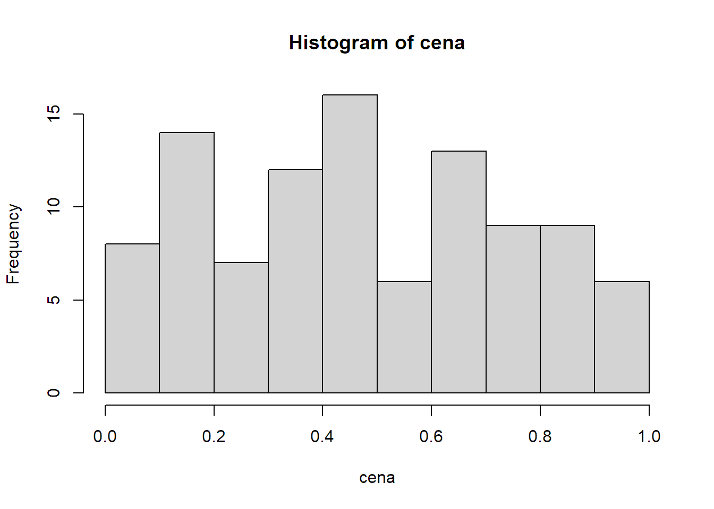

3 První kroky v R a RStudiu
Nebudu vám tajit, že se způsob práce v R od Excelu na první pohled dost liší. Excel vám naservíruje připravený rastr buněk, do kterých můžete rovnou psát hodnoty a vzorce. V R naopak začínáte s prázdnou plochou, a co si sami neuděláte, to nemáte.
3.1 Excel vs. R
Když chcete v Excelu sečíst dvě čísla ve dvou různých buňkách, nejprve je do těch buněk napíšete. Např. číslo 10 do buňky A1 a číslo 20 do buňky B1. Do buňky C1 pak můžete dát vzorec =A1+B1, který čísla sečte.
V R to uděláte podobně jen musíte napsat kód, který „buňky" (v R se jim říká objekty) založí a pak sečte. Ten kód může vypadat třeba takhle:
prvni_cislo <- 10
druhe_cislo <- 20
prvni_cislo + druhe_cislo## [1] 30Případně můžete, stejně jako v Excelu, dvě čísla rovnou sečíst:
10 + 20## [1] 30A nebo výsledek uložit do jiné „buňky" (objektu):
prvni_cislo <- 10
druhe_cislo <- 20
vysledek <- prvni_cislo + druhe_cisloa tu si pak zobrazit:
vysledek## [1] 30Ve skutečnosti je to o dost pestřejší. Můžete jedním „vzorcem" (v R se tomu říká výraz nebo příkaz) zpracovat celou řadu nebo tabulku různých hodnot a výsledek zobrazit mnoha způsoby – jako tabulku, formátovaný text, graf. To vše se v této knížce naučíte.
3.2 Tři způsoby práce s R
S R jde pracovat více různými způsoby. Já nejčastěji používám tři:
- Interaktivní práce v konsoli.
- Polointeraktivní práce se skriptem.
- Interaktivní, poloautomatická či zcela automatická tvorba dokumentu v R Markdownu.
Všechny tři ukážu na jednoduchém příkladu: představte si, že jste dnes ve svém obchodě vydali 100 účtenek. Teď se chcete rychle dozvědět, kolik dělá celková tržba a jaká byla typická útrata jednoho zákazníka.
3.3 Interaktivní práce s konsolí
Vaše RStudio vypadá nějak takhle a konsole je ta velká plocha vlevo. Psát budete za zobáček úplně vlevo (jinam ani nejde umístit kursor), každý řádek vždy odentrujete a konsole vám většinou nějak odpoví.

RStudio: Console
Nejprve si vygenerujte účtenky. Budou sice trochu falešné, ale to nevadí. Do konsole napište:
cena <- round(rnorm(n = 100, mean = 1000, sd = 200), digits = 2)Odentrujte a nic se nestane. Vlastně stane. Pokud se podíváte doprava na záložku Environment, uvidíte tam tohle:

RStudio: Výsledek přiřazení
Příkazem jste totiž vytvořili v prostředí R (environment) nový objekt cena a uložili jste do něj sto (skoro) náhodných čísel. Na všechny se můžete podívat příkazem:
cena## [1] 636.29 763.84 1261.80 923.00 1272.85 1408.01 1002.65 852.00 1062.26
## [10] 935.12 810.08 985.42 1228.95 1188.68 1043.50 957.47 871.39 986.92
## [19] 885.57 912.55 897.34 975.36 1316.21 1065.30 1025.35 1001.00 942.90
## [28] 1070.64 665.66 1099.88 1322.85 910.82 1105.65 999.96 1266.06 783.70
## [37] 1376.37 1141.57 1108.23 1082.65 1056.28 922.58 907.96 933.09 891.45
## [46] 846.28 1064.51 917.54 1033.28 1220.21 794.79 705.47 720.11 1063.90
## [55] 887.01 1051.38 1107.13 706.60 866.02 1154.09 776.87 1008.32 869.33
## [64] 705.77 595.85 876.54 1272.92 927.65 843.84 709.43 1095.41 956.49
## [73] 870.93 1143.56 1092.50 1120.93 1095.35 946.60 1103.89 996.49 701.73
## [82] 820.53 985.98 816.56 962.85 965.75 747.59 1230.46 1186.47 1256.98
## [91] 588.32 1174.64 1341.94 902.51 1235.47 799.66 945.24 890.17 1058.32
## [100] 1215.94což pak na konsoli vypadá nějak takhle:

Výsledek příkazu cena
Teď vám to ale musím vysvětlit trochu podrobněji.
3.3.1 Objekty (proměnné)
Objekt jazyka R se chová podobně jako proměnná v jiných programovacích jazycích. Je to vlastně takový šuplík, do kterého si můžete ukládat nejrůznější hodnoty: čísla, textové řetězce, logické hodnoty (TRUE a FALSE čili pravda a nepravda) apod.
Oproti jiným programovacím jazykům je tu pár zvláštností:
- Do objektů se hodnoty přiřazují operátorem
<-. Ten můžete vložit i klávesovou zkratkou Alt+- (Alt pomlčka). - Běžné objekty R jsou ve skutečnosti vektory. V jiných programovacích jazycích tomu obvykle odpovídá jednorozměrné pole. V praxi to znamená, že v číselném objektu nemusí být jen jedno číslo, ale může jich tam být moc. V našem příkladu jich je sto.
- R s vektory automaticky i počítá. K vektoru pěti čísel tedy můžete přičíst jedno číslo (ve skutečnosti vektor s jedním číslem) a ono se automaticky přičte ke všem pěti.
Kde se vám tam těch sto čísel vzalo? Získali jste je funkcemi rnorm a round.
3.3.2 Funkce
Poučka praví: když to existuje, je to objekt, a když to něco dělá, je to funkce. Můžete to brát i tak, že funkce je všechno, co má za svým jménem kulaté závorky. V závorkách mohou být tzv. parametry (někdy se jim říká argumenty; je to totéž), čili vstupní data, která chcete funkci předat. Funkce tyto parametry zpracuje a vrátí výsledek. Vlastně úplně stejně, jako funkce v Excelu.
U názvů objektů i funkcí záleží na velikosti písmen. Cena je něco jiného než cena, tak pozor na to.
rnorm je funkce, která vrací (skoro) náhodná čísla. Skoro jsem dal do závorky, protože vrácená čísla jsou náhodná v rámci normálního rozdělení (to je ta slavná Gaussova křivka), jehož podobu určíte parametry mean (průměr) a sd (směrodatná odchylka neboli standard deviation). Parametrem n navíc musíte určit, kolik těch čísel vlastně chcete.
Následující příkaz tedy vrátí vektor sta náhodných čísel z normální rozdělení s průměrem 1000 a směrodatnou odchylkou 200.
rnorm(n = 100, mean = 1000, sd = 200)## [1] 775.2707 906.0597 1346.8479 969.0904 1069.8852 1193.2315 1225.6664
## [8] 1088.9622 1408.4828 748.0219 1021.3645 854.3194 889.2806 1076.9131
## [15] 1174.8636 924.8138 709.5927 898.2154 1234.4981 1097.9086 886.2173
## [22] 1182.9906 953.6293 1184.7174 764.0121 988.7168 873.7859 1027.6975
## [29] 1024.7955 1092.6073 720.4660 670.0851 1009.7411 965.6276 831.3502
## [36] 829.2227 701.5421 1090.2413 1326.8901 1419.1183 979.1111 1019.6728
## [43] 1123.2974 1220.2357 986.8102 1103.8997 1118.4399 1054.0260 1198.2659
## [50] 899.0764 1303.6900 783.5715 1179.5439 900.0759 1167.3135 935.2875
## [57] 1239.8017 1429.3157 700.5178 1014.9985 913.6697 729.9909 997.9775
## [64] 1224.0017 979.7479 1327.6710 513.7405 1325.0247 1281.6669 1247.0353
## [71] 894.3093 970.2162 1085.5230 1069.7381 932.8655 897.0463 920.6399
## [78] 1034.1875 948.1949 1055.4193 1075.3560 733.3956 949.7666 873.1251
## [85] 1027.7273 1247.8292 932.2569 946.1996 932.5610 1019.5624 1121.5469
## [92] 856.6582 1067.8424 798.1232 805.4066 909.0423 839.3569 819.6027
## [99] 1237.9044 1073.0261Klidně si ho zadejte párkrát do konzole s různými parametry, abyste viděli, jak se mění výsledek.
round je funkce, která zaokrouhluje. První parametr je číselný vektor, který se má zaokrouhlit, a druhý parametr digits určuje, na kolik desetinných míst se má zaokrouhlit. Následující příkaz tedy zaokrouhlí číslo 1.145 na dvě desetinná místa:
round(1.145, digits = 2)## [1] 1.15První parametr funkce round se jmenuje x, ale první parametr funkce se často píše bez jména, protože jeho pořadí nejde poplést. Každopádně ale může napsat volání funkce i takto a výsledk bude stejný:
round(x = 1.145, digits = 2)## [1] 1.15A teď už asi chápete – funkce rnorm vrátí sto čísel s hodně desetinnými čísly, a proto jste její výsledek ještě poslali funkci round, která celý vektor (tj. všech sto čísel) zaokrouhlila na dvě desetinná místa. V jiném programovacím jazyce byste na to potřebovali dost složité výpočty v cyklech, v R stačí tohle:
round(rnorm(n = 100, mean = 1000, sd = 200), digits = 2)## [1] 851.52 880.21 951.38 1259.11 913.94 990.81 1162.48 792.89 1134.76
## [10] 814.18 1107.73 899.58 1138.24 762.01 721.25 1142.89 1130.28 774.26
## [19] 1040.10 1012.70 909.68 691.97 1120.13 978.22 1037.76 934.88 919.67
## [28] 1207.00 1236.89 690.75 1101.04 963.11 799.38 1209.06 1224.63 1157.81
## [37] 797.50 862.08 900.69 923.46 1031.02 1130.90 1152.24 945.20 822.10
## [46] 1130.88 1289.33 1196.42 844.21 992.22 851.18 874.80 569.01 1001.08
## [55] 1111.10 776.71 855.92 978.50 1036.66 932.81 1328.17 1073.89 903.14
## [64] 997.69 1090.70 1025.70 1073.00 1356.46 1015.98 972.83 1071.52 1012.03
## [73] 1375.56 1004.10 944.07 1172.29 1025.68 773.03 1110.24 993.30 558.18
## [82] 989.77 1283.08 1140.87 980.29 1018.33 817.89 1197.04 701.86 1018.20
## [91] 1072.89 681.30 1022.59 1309.34 887.87 1036.54 1031.54 1039.53 1101.10
## [100] 934.99Mimochodem, všimli jste si v předešlých příkladech těch čísel v hranatých závorkách? Protože se v příkladech vypisují jako výsledky vektory (všechny základní, tzv. atomické typy jsou v R vektory), R vám těmi čísly v hranatých závorkách říká, na jaké pozici ve vektoru daná hodnota je.
A hranaté závorky jdou i použít pro adresování konkrétního prvku vektoru. Třeba tohle zobrazí z vytvořeného vektoru cena jenom pátý prvek:
cena[5]## [1] 1272.85a tohle pátý až desátý:
cena[5:10]## [1] 1272.85 1408.01 1002.65 852.00 1062.26 935.12Chtěli jsme ještě účtenky sečíst, že? Je to hračka:
sum(cena)## [1] 98831.31Zajímá vás, kolik dělá celková tržba bez DPH?
sum(cena / 121 * 100)## [1] 81678.77případně:
sum(cena) / 121 * 100## [1] 81678.77Obojí by vám mělo dát stejný výsledek. V prvním případě se ale nejprve vydělí každý jednotlivý prvek vektoru a pak se celý vektor sečte, kdežto v druhém případě se celý vektor nejprve sečte a pak teprve vydělí.
Zajímá vás rozložení ceny zobrazené v histogramu?
hist(cena)
Zobrazí se vám na panelu Plot vpravo (váš bude vypadat trochu jinak).
Tím jste poznali další dvě funkce (sum a hist). Za chvíli vám ukážu, jak totéž udělat skriptem a v R Markdownu, ale nejdřív pár slov k nápovědě.
3.3.3 Integrovaná nápověda
R má přímo v sobě zabudovanou nápovědu ke každé funkci. Ta se projevuje jednak tím, že když začnete psát název funkce, po pár znacích se začnou nabízet funkce, jejichž název těmi znaky začíná a v bublině se objeví stručný popis. Tuto nápovědu lze případně vynutit klávesovou kombinací Ctrl+Space.
Nápověda při psaní názvu funkce
Pokud máte funkci napsanou i se závorkami, Ctrl+Space vám napoví možné parametry.

Nápověda při psaní názvu funkce
Můžete též na konzoli zadat příkaz příkaz tvořený otazníkem a názvem funkce, např. ?rnorm, a pak se vám otevře kompletní nápověda na panelu Help vpravo.

Nápověda při psaní názvu funkce
A konečně můžete s kurzorem na názvu funkce stisknout F1 a dostanete opět kompletní nápovědu v panelu Help.
Při práci s R tedy nemusíte skoro googlit. Stačí si pamatovat alespoň přibližné názvy funkcí.
3.4 Práce se skripty
Práce v konsoli je sice flexibilní, ale na víc než pár příkazů dost nepraktická. Když uděláte chybu, můžete se sice šipkami nahoru a dolů pohybovat po historii příkazů a opravovat je, ale není to ono. Chyby se mnohem lépe opravují ve skriptech.
Z menu File → New File vyberte R Script a vlevo nahoře se vám otevře editor skriptů. Do něj si vložte všechny příkazy, které jste předtím zadali postupně do konsole. Nemusíte to ale dělat ručně – podívejte se vpravo na záložku History a vida, jsou tam, že? Vyberte ty správné a tlačítkem To Source je přesuňte do skriptu. Okno RStudia by pak mělo vypadat nějak takto:

Skript v RStudiu
Když nyní na kterémkoli řádku stisknete Ctrl+Enter, celý řádek se vykoná stejně, jako kdybyste ho zadali na konzoli. Můžete i klávesou Shift vybrat víc řádků a pak se po Ctrl+Enter vykonají všechny. A konečně můžete tlačítkem Source nad editorem vykonat celý skript. Po vykonání celého skriptu by mělo okno RStudia vypadat nějak takto:

RStudio po vykonání celého skriptu
Nezapomeňte si ale celý skript uložit pod nějakým vhodným jménem (třeba prvni-skript). Měl by se vám uložit do složky projektu a ke jménu se automaticky připojí přípona R.
3.4.1 Úprava skriptu
Hlavní výhoda skriptu spočívá v tom, že jde snadno upravit a pak celý znovu spustit. Vyzkoušejte si to. Hned v prvním řádku změňte rnorm za runif a odstraňte této funkci parametry mean a sd, takže zbude jen:.
cena <- round(runif(n = 100), digits = 2)Když teď celý skript znovu spustíte příkazem Source (nebo klávesovou zkratkou Ctrl+Shift+S), poznáte, co se změnilo?
hist(cena)
Ano, změnil se histogram.
Funkce rnorm totiž vybírá náhodná čísla z normálního rozložení (random normal distribution) a histogram má proto tvar známe gaussovy křivky – čísla blíže průměru se vyskytnou pravděpodobněji než čísla dál od průměru. Funkce runif (random uniform distribution) naproti tomu vybírá náhodná čísla z rovnoměrného rozdělení, takže pravděpodobnost zastoupení všech čísel mezi nulou a jednou je stejná.
3.5 R Markdown
Skripty jsou praktické, ale mají dvě nevýhody:
- Když nechcete provést celý skript najednou, špatně se v nich hledá část, kterou chcete spustit.
- Výstup není moc přehledný. Textový výstup se ne moc hezky zobrazí v konzoli, grafy na panelu Plots.
Obě tyto nevýhody odstraňuje R Markdown.
3.5.1 Co je R Markdown
3.5.1.1 Základní Markdown
Samotný Markdown možná znáte. Je to jednoduchý značkovací jazyk, kterým jdou v čistě textovém formátu vyznačit základní strukturální a formátovací prvky – nadpisy, odstavce, odrážky, odkazy, tučný text apod. Z toho pak jde vygenerovat výstupy v různých formátech: nejčastěji v HTML, ale klidně i PDF, Word atd.
Text v Markdownu vypadá např. takto:
# Tohle je nadpis 1. úrovně
Tohle je běžný odstavec. Víc odstavců je od sebe odděleno dvěma Entry čili prázdným řádkem.
## Tohle je nadpis 2. úrovně
Tohle je příklad [odkazu v textu](https://example.com). A tohle je příklad odrážek:
- první odrážka,
- druhá odrážka,
- třetí odrážka.
Jdou udělat i číslované body, které se automaticky očíslují podle pořadí:
1. První bod.
1. Druhý bod.
1. Poslední bod.Jak vidíte, docela dobře se píše a dobře se i čte, i když není převedený (vyrenderovaný) do HTML. Ale když se převede, je výsledek docela hezký:

Příklad převedeného Markdownu
3.5.1.2 R Markdown
R Mardown je Markdown, do kterého jsou zamíchané kusy eRkového kódu. Vypadá nějak takhle:

Příklad R Markdownu
Vyzkoušejte si nyní R Markdown sami. Nejprve si založte nový soubor: Z menu File → New File vyberte R Notebook. Objeví se vám editor s předvyplněným vzorovým obsahem. Ten celý zrušte (Ctrl+A, Del) a zkopírujte do něj tohle:
---
title: "Můj první R Notebook"
output: html_notebook
---
Toto je příklad [R Markdown](http://rmarkdown.rstudio.com) zápisníku (notebook). Začíná nahoře metadaty, které zde udávají jen titulek a formát výstupu. Metadata jsou ohraničena řádky tvořenými třemi pomlčkami. Pak následuje normální Markdown.
Za tímto odstavcem je blok eRkového kódu, kterému se říká *chunk* a já mu budu říkat *blok*.
```{r}
cena <- round(rnorm(n = 100, mean = 1000, sd = 200), digits = 2)
sum(cena)
```
Pokud blok spustíte zelenou šipečkou na jeho pravém horním okraji nebo klávesovou zkratkou Ctrl+Shift+Enter, provede se a zobrazí výstup přímo pod sebou.Výsledek bude vypadat jako na předešlém obrázku. Nyní můžete podle instrukcí vykonat jediný blok kódu, který tam zatím máte, a pod blokem se vám zobrazí součet ceny.
A můžete i celý soubor převést do HTML a prohlédnout si ho v celé kráse. Uděláte to příkazem Preview z toolbaru nad editorem, ale před tím ještě musíte soubor uložit, třeba pod jménem prvni-notebook. Ke jménu se automaticky připojí přípona Rmd.
Celý výsledek se zobrazí v panelu Viewer vpravo:

Náhled vykresleného R Mardownu
Už jste pochopili, v čem jsem napsal tuhle knížku? Ano, v RStudiu v R Markdownu :-)
Ze všech tří způsobů používání R (konzole, skripty, R Markdown) používám R Markdown pro běžné analýzy nejčastěji. Píšu si v něm postup, eRkový kód i poučení z výsledků. Když se pak později k analýze vrátím, třeba proto, že chci pro jiného klienta udělat podobnou, krásně vidím, jak jsem postupoval a co a proč jsem udělal. Už tohle je pro mě obrovská výhoda oproti excelové tabulce, ve které se už po pár týdnech nevyznám a musím znovu pracně zkoumat, co tam je, proč to tam a jak to vlastně funguje.
A totéž doporučuji i vám: klidně pro teď zapomeňte, že konzole a skripty vůbec existují, a používejte na všechno R Markdown.
3.6 Z téhle kapitoly si pamatujte
3.6.1 R Markdown
Zvykněte si na R Markdown jako základní způsob práce s R. Konzole se hodí pro pár pomocných příkazů, nebo abyste si vyzkoušeli, jak která funkce funguje. Skripty se hodí pro dávkové zpracování bez interaktivity, když přesně víte, co a jak chcete udělat. Také se jimi definují nové funkce a píšou balíčky. Pro všechno ostatní je tu R Markdown. Když si budete cokoli z této knihy zkoušet, založte si na to R Notebook nebo R Markdown Document – ono je to skoro totéž.
Bude se vám hodit pár klávesových zkratek:
| Akce | Windows & Linux | Mac |
|---|---|---|
| Vlož blok kódu (chunk) | Ctrl+Alt+I | Command+Option+I |
| Vlož přiřazení (znaky <-) | Alt+- | Option+- |
| Proveď řádek kódu s kurzorem | Ctrl+Enter | Command+Enter |
| Proveď blok kódu s kurzorem | Ctrl+Shift+Enter | Command+Shift+Enter |
| Proveď všechny bloky v souboru | Ctrl+Alt+R | Command+Option+R |
| Proveď všechny bloky nad kurzorem | Ctrl+Alt+P | Command+Option+P |
| Zobraz celý dokument v HTML | Ctrl+Shift+K | Command+Shift+K |
| Jdi na další blok nebo titulek | Ctrl+PgDown | Command+PgDown |
| Jdi na předchozí blok nebo titulek | Ctrl+PgUp | Command+PgUp |
| Nápověda k funkci s kurzorem | F1 | F1 |
Pokud si je nechcete pamatovat, všechny mají i své tlačítko buď na toolbaru nad editorem, nebo přímo v pravém horním rohu každého bloku kódu. Funkce tlačítka se vám zobrazí po najetí myši.
3.6.2 Vektory
Zatímco v Excelu máte v jedné buňce jedno číslo (nebo jeden text, jedno datum apod.), objekt základního typu (číslo, text, logická hodnota) v R je vždy vektor. To znamená, že obsahuje uspořádanou řadu hodnot daného typu. Vektor může mít délku 1, pak obsahuje jen jednu hodnotu, ale taky třeba milion, a pak obsahuje milion hodnot.
S vektory počítají i běžné operace. Když k vektoru s deseti čísly přičtete jiný vektor s deseti čísly, bude výsledek opět vektor s deseti čísly, ve kterém se sečte první s prvním, druhé s druhým atd. Pokud ale k vektoru s deseti čísly přičtete vektor s jedním číslem, dojde k tzv. recyklaci druhého vektoru, což znamená, že se číslo z druhého vektoru postupně přičte ke všem číslům prvního vektoru.
Ukážu to raději na příkladu (funkce c tvoří vektory):
c(10, 20, 30) + c(1, 2, 3)## [1] 11 22 33c(10, 20, 30) + 1## [1] 11 21 31c(10, 20, 30) + c(1, 2)## Warning in c(10, 20, 30) + c(1, 2): longer object length is not a multiple of
## shorter object length## [1] 11 22 31Vidíte, že poslední příklad sice upozorní na možnou chybu, ale provede se podle pravidla recyklace.
c(10, 20, 30, 40) + c(1, 2)## [1] 11 22 31 42Zde na chybu neupozorní, protože se druhý vektor zrecykluje přesně dvakrát.
3.6.3 Funkce
Funkce fungují úplně stejně jako v Excelu. Nějak se jmenují a v závorce mají parametry. Když žádné parametry nemají, musí za nimi být prázdná závorka. Funkce stejně jako v Excelu vrátí nějakou hodnotu a nikdy nezmění hodnotu parametrů. Pár rozdílů tu ale přeci jenom je:
- V názvech funkcí záleží na velikosti písmen.
Viewaviewjsou dvě různé funkce. - Parametry jsou pojmenované, takže jdou zapisovat způsobem
round(x = 1.145, digits = 2). Pokud ale dodržím závazné pořadí parametrů, mohu napsat iround(1.145, 2)a dostanu stejný výsledek. - Funkce umí pracovat s vektory. To znamená, že např. funkce
roundumí zaokrouhlit mnoho různých čísel naráz.